Description
This shows the output of Exploratory Factor Analysis (EFA) functions from the package rwf. EFA uncovers the latent structure underlying a set of observed variables: it identifies groups of variables that share common variance, which are interpreted as factors. The functions include loading plots, scree plots, loading tables, residual diagnostics, and a full EFA report.
Installation instructions for rwf can be found here
The code can be found here
Plot Loadings
plot_loadings produces a heatmap of factor loadings,
making it easy to see which variables belong to which factor and how
strongly they load. Two matrix types are available:
- Structure matrix: correlations between each variable and each factor — shows total association including shared variance between factors.
- Pattern matrix: unique contribution of each factor to each variable after accounting for factor intercorrelations — use this to interpret factor meaning in oblique rotation.
Four datasets are shown to illustrate how the plot looks under different factor structures:
-
mtcars— a real dataset with a moderate two-factor structure. - A simulated dataset with two clear, well-separated factors (high within-factor correlations ~0.8, low cross-factor correlations ~0.1).
- A simulated dataset where only one factor has strong internal correlations — tests asymmetric structure detection.
- A near-identity correlation matrix (all correlations ~0.01) — no real factor structure; loadings should be near zero.
model<-psych::fa(mtcars,nfactors=2,rotate="oblimin",fm="pa",oblique.scores=TRUE)
plot_loadings(model=model,matrix_type="structure")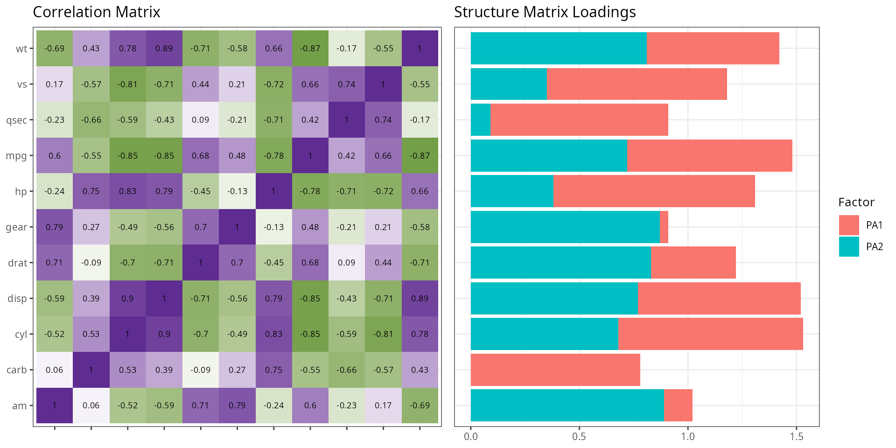
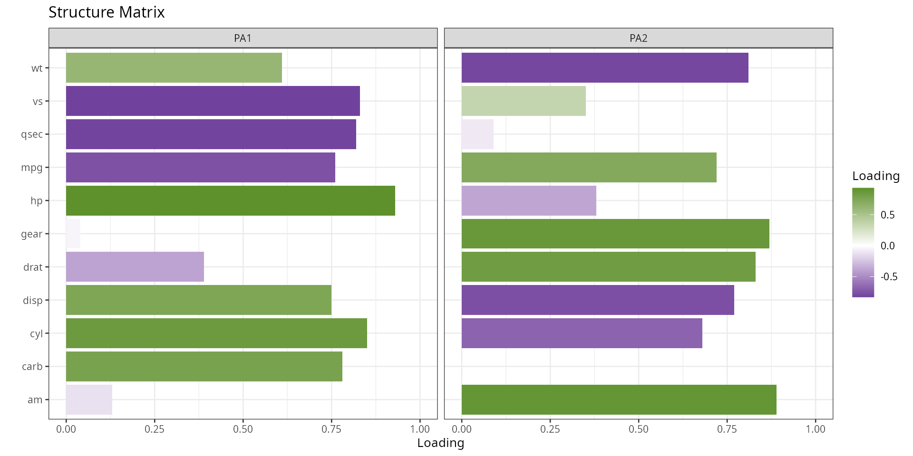
plot_loadings(model=model,matrix_type="pattern")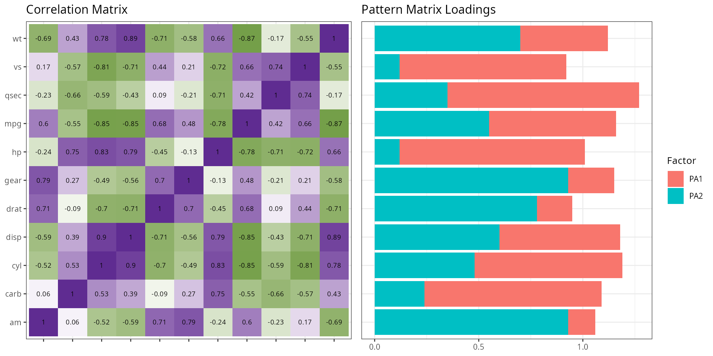
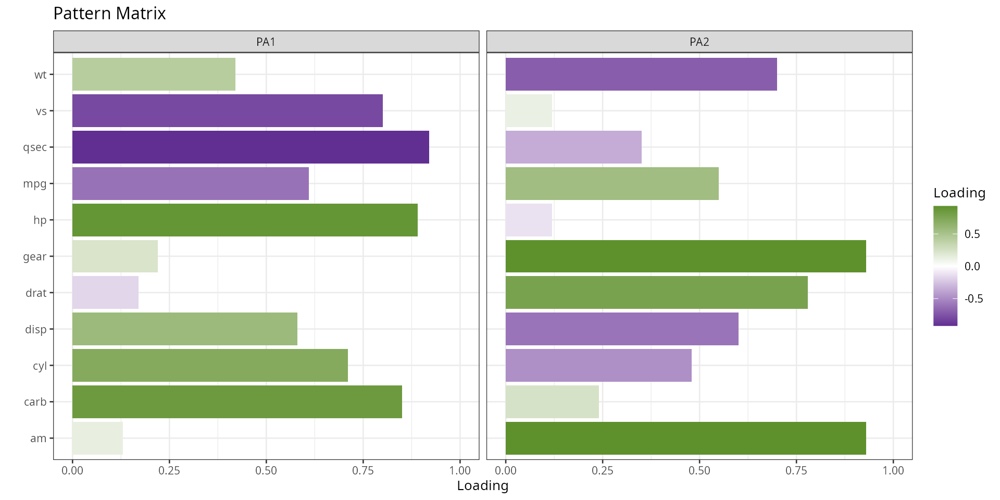
cm<-matrix(c(1,.8,.8,.1,.1,.1,
.8,1,.8,.1,.1,.1,
.8,.8,1,.1,.1,.1,
.1,.1,.1,1,.8,.8,
.1,.1,.1,.8,1,.8,
.1,.1,.1,.8,.8,1),
ncol=6,nrow=6)
df1<-generate_correlation_matrix(cm,nrows=10000)
model1<-psych::fa(df1,nfactors=2,rotate="oblimin",fm="pa",oblique.scores=TRUE)
plot_loadings(model=model1,matrix_type="pattern",base_size=10)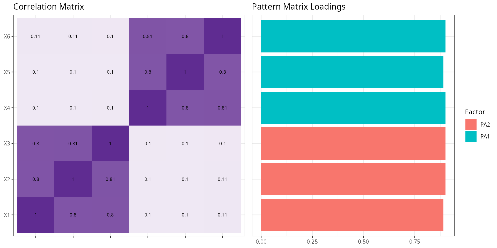
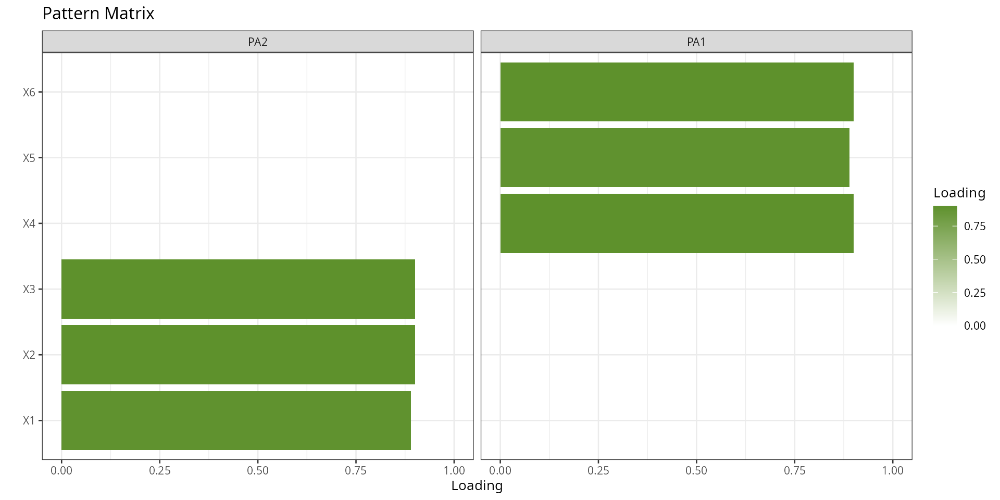
cm<-matrix(c(1,.1,.1,.1,.1,.1,
.1,1,.1,.1,.1,.1,
.1,.1,1,.1,.1,.1,
.1,.1,.1,1,.8,.8,
.1,.1,.1,.8,1,.8,
.1,.1,.1,.8,.8,1),
ncol=6,nrow=6)
df1<-generate_correlation_matrix(cm,nrows=10000)
model2<-psych::fa(df1,nfactors=2,rotate="oblimin",fm="pa",oblique.scores=TRUE)
plot_loadings(model=model2,matrix_type="pattern",base_size=10)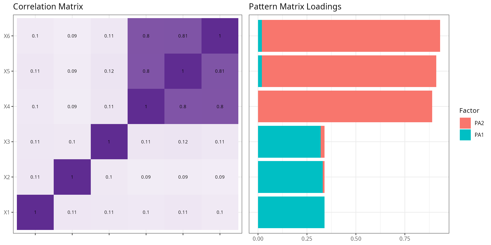
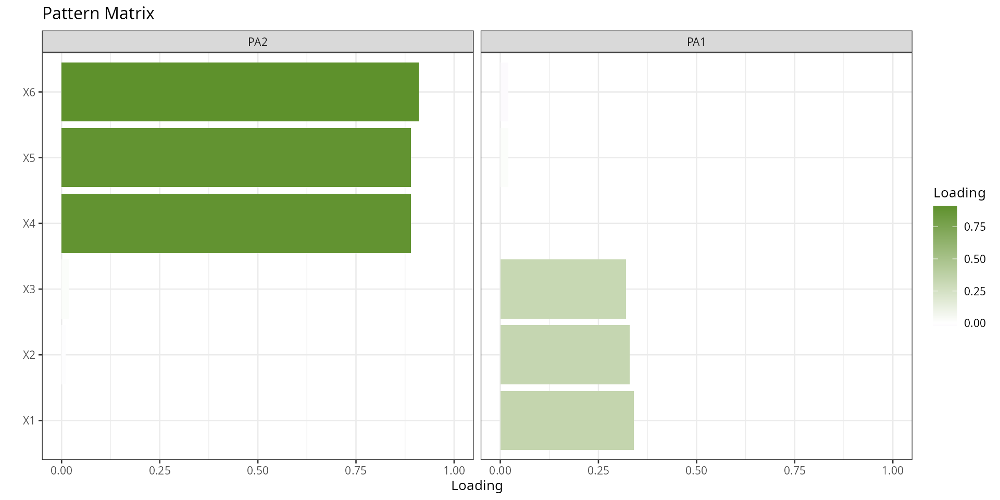
cm<-matrix(c(1,.01,.01,.01,.01,.01,
.01,1,.01,.01,.01,.01,
.01,.01,1,.01,.01,.01,
.01,.01,.01,1,.01,.01,
.01,.01,.01,.01,1,.01,
.01,.01,.01,.01,.01,1),
ncol=6,nrow=6)
df1<-generate_correlation_matrix(cm,nrows=10000)
model3<-psych::fa(df1,nfactors=2,rotate="oblimin",fm="pa",oblique.scores=TRUE)
plot_loadings(model=model3,matrix_type="pattern",base_size=10)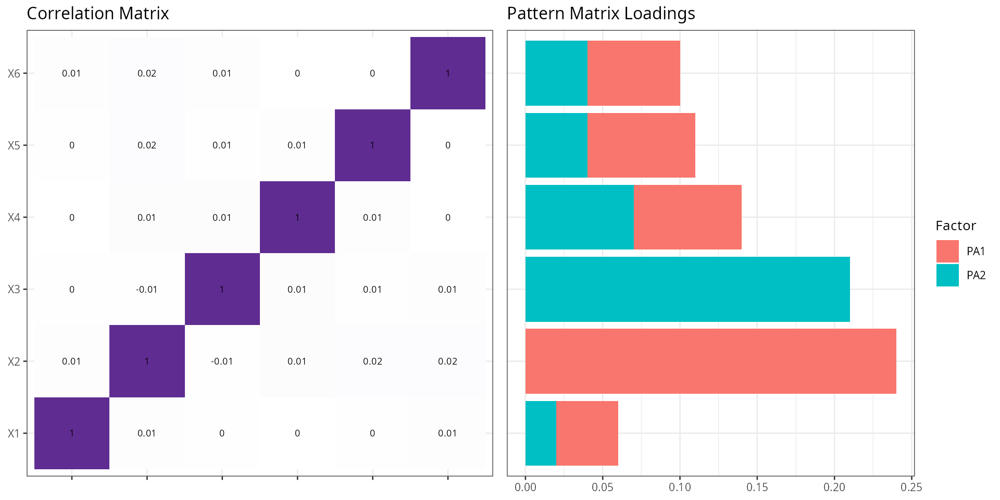
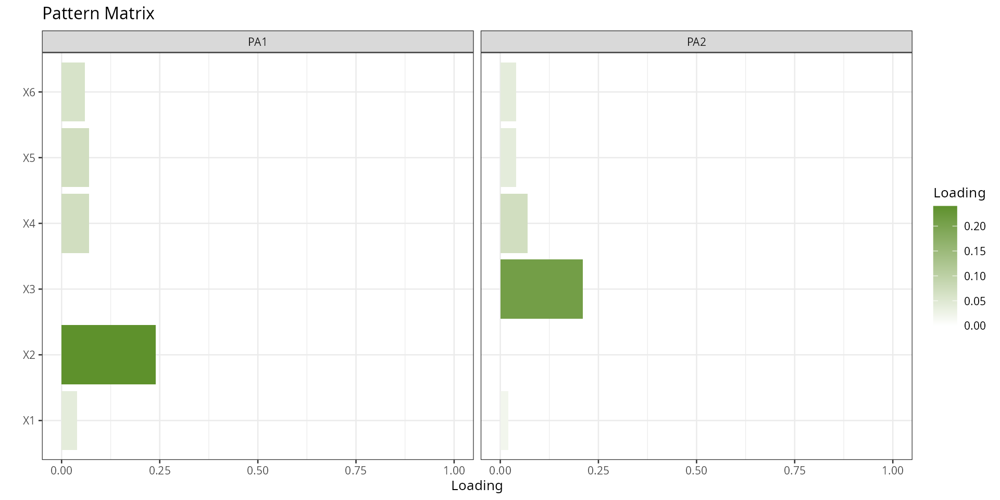
Plot Scree
A scree plot shows eigenvalues (the amount of variance each factor explains) in descending order. It is used to decide how many factors to retain. The conventional rule is to keep factors whose eigenvalue exceeds 1 (Kaiser criterion) or to look for the “elbow” — the point where the curve flattens out.
plot_scree plots eigenvalues alongside parallel analysis
results, which compares observed eigenvalues against those from random
data of the same size. Factors with eigenvalues above the parallel
analysis line are unlikely to be noise and should be retained.
plot_scree(df=mtcars,title="",base_size=15)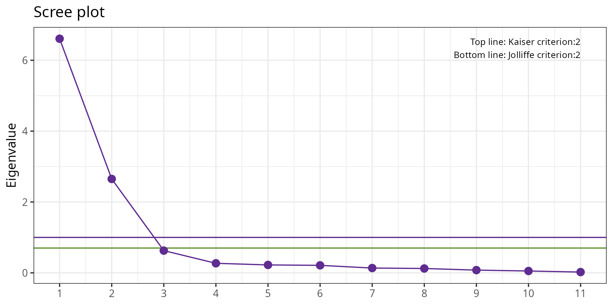
Model Loadings
model_loadings returns the factor loading matrix as a
formatted table. The cut argument suppresses loadings below
a threshold so only meaningful loadings are shown — this makes factor
interpretation cleaner. The sort argument reorders
variables so that items loading on the same factor appear together.
Three calls demonstrate the options:
-
cut = NULL: all loadings shown, pattern matrix. -
cut = 0.4: only loadings ≥ 0.4 shown, structure matrix — a common threshold for “meaningful” loadings in applied research. -
cut = 0.4, matrix_type = "all": both pattern and structure matrices side by side, unsorted.
model<-psych::fa(mtcars,nfactors=2,rotate="oblimin",fm="pa",oblique.scores=TRUE)
model_loadings(model=model,cut=NULL,matrix_type="pattern")## Matrix variable PA2 PA1
## qsec Pattern qsec -0.92
## hp Pattern hp 0.89
## carb Pattern carb 0.85
## vs Pattern vs -0.8
## cyl Pattern cyl
## mpg Pattern mpg
## am Pattern am 0.93
## gear Pattern gear 0.93
## drat Pattern drat 0.78
## wt Pattern wt
## disp Pattern disp
model_loadings(model=model,cut=0.4,matrix_type="structure")## Matrix variable PA2 PA1
## hp Structure hp 0.93
## cyl Structure cyl 0.85 -0.68
## vs Structure vs -0.83
## qsec Structure qsec -0.82
## carb Structure carb 0.78
## mpg Structure mpg -0.76 0.72
## am Structure am 0.89
## gear Structure gear 0.87
## drat Structure drat 0.83
## wt Structure wt 0.61 -0.81
## disp Structure disp 0.75 -0.77
model_loadings(model=model,cut=0.4,matrix_type="all",sort=FALSE)## Matrix variable PA2 PA1
## 1 Pattern mpg -0.61 0.55
## 2 Pattern cyl 0.71 -0.48
## 3 Pattern disp 0.58 -0.6
## 4 Pattern hp 0.89
## 5 Pattern drat 0.78
## 6 Pattern wt 0.42 -0.7
## 7 Pattern qsec -0.92
## 8 Pattern vs -0.8
## 9 Pattern am 0.93
## 10 Pattern gear 0.93
## 11 Pattern carb 0.85
## 12 Structure mpg -0.76 0.72
## 13 Structure cyl 0.85 -0.68
## 14 Structure disp 0.75 -0.77
## 15 Structure hp 0.93
## 16 Structure drat 0.83
## 17 Structure wt 0.61 -0.81
## 18 Structure qsec -0.82
## 19 Structure vs -0.83
## 20 Structure am 0.89
## 21 Structure gear 0.87
## 22 Structure carb 0.78Compute Residual
Residuals in EFA are the differences between the observed correlation matrix and the correlation matrix reproduced by the factor model. A good-fitting model produces small residuals.
compute_residual_stats returns summary statistics of
these residuals (mean, RMSR — root mean square of residuals, and the
proportion of residuals above a given threshold). A low RMSR (typically
< 0.05) and few large residuals indicate that the factor model
adequately reproduces the observed correlations.
model<-psych::fa(mtcars,nfactors=2,rotate="oblimin",fm="pa",oblique.scores=TRUE)
compute_residual_stats(model)## residual_statistics value critical formula
## 1 Root Mean Squared Residual 0.04419293 NA sqrt(mean(residuals^2))
## 2 Number of absolute residuals > 0.05 13.00000000 NA abs(residuals)>0.05
## 3 Proportion of absolute residuals > 0.05 0.23636364 0.5 numberLargeResiduals/nrow(residuals)Report EFA
report_efa bundles all the above steps into a single
call — it fits the EFA model, extracts loadings, computes residual
statistics, and produces plots. It returns a structured list suitable
for inclusion in a report.
The example uses a simulated dataset with a known two-factor
structure (the same 6×6 correlation matrix used in the Plot Loadings
section), so the output should cleanly recover the two factors. The
computation chunk uses results='hide' to suppress
intermediate output; the formatted result is printed in the next
chunk.
cm<-matrix(c(1,.8,.8,.1,.1,.1,
.8,1,.8,.1,.1,.1,
.8,.8,1,.1,.1,.1,
.1,.1,.1,1,.8,.8,
.1,.1,.1,.8,1,.8,
.1,.1,.1,.8,.8,1),
ncol=6,nrow=6)
df1<-generate_correlation_matrix(cm,nrows=10000)
model<-psych::fa(df1,nfactors=2,rotate="oblimin",fm="pa",oblique.scores=TRUE)
result<-report_efa(model=model,df=df1)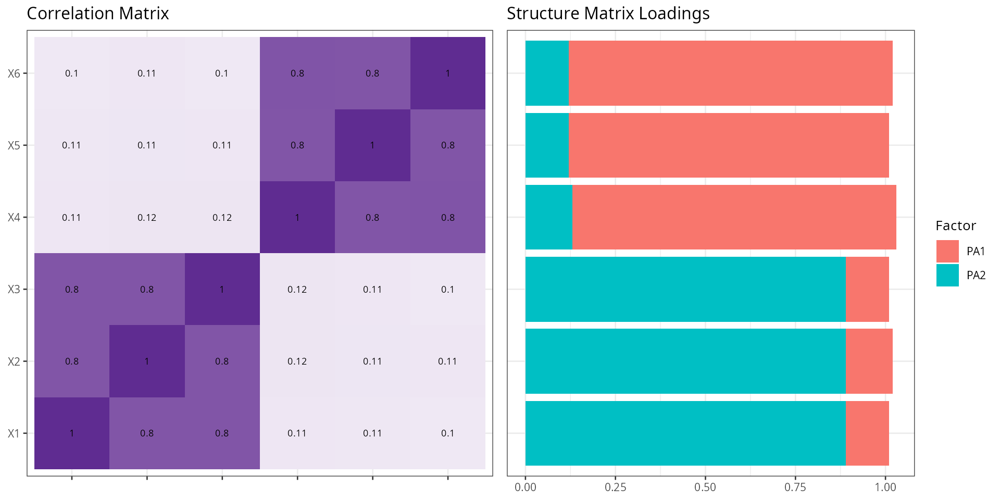

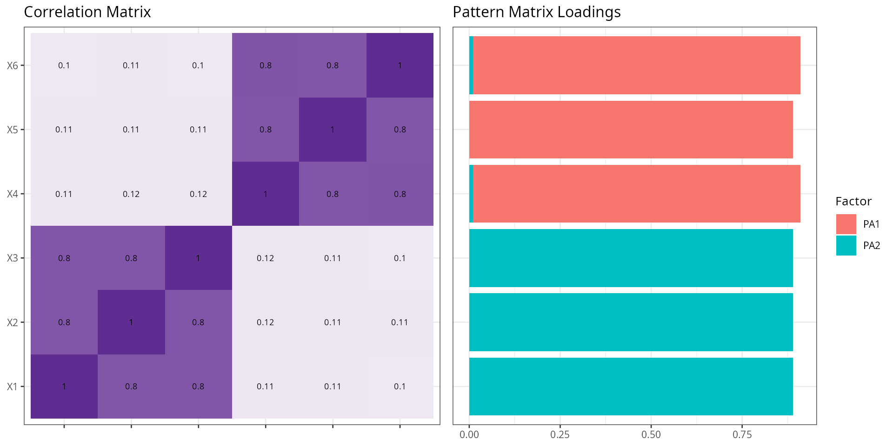

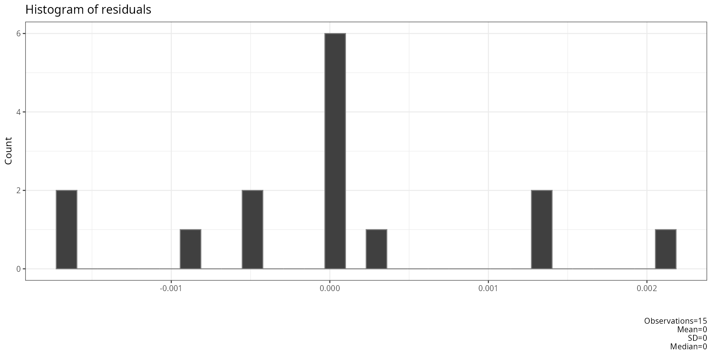
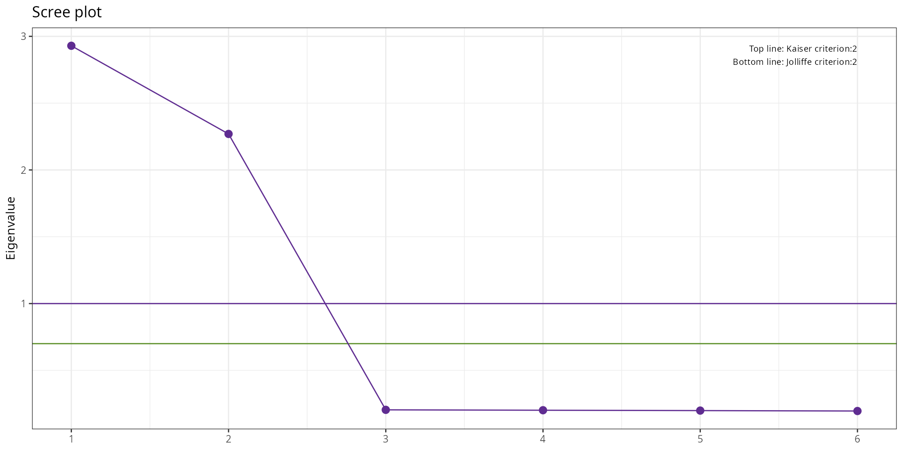

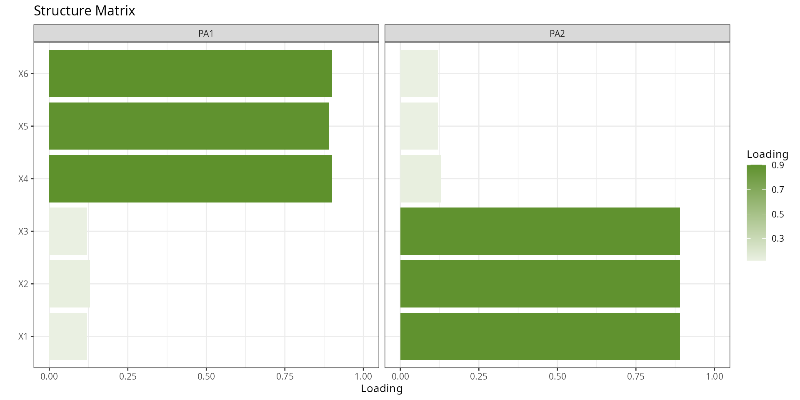


result## $correlations
## type X1 X2 X3 X4 X5 X6
## X1 reproduced correlations 7.980176e-01 7.975985e-01 7.991958e-01 1.118429e-01 1.076295e-01 1.016668e-01
## X2 reproduced correlations 7.975985e-01 7.972255e-01 7.987964e-01 1.177913e-01 1.135650e-01 1.076289e-01
## X3 reproduced correlations 7.991958e-01 7.987964e-01 8.003848e-01 1.146651e-01 1.104388e-01 1.044776e-01
## X4 reproduced correlations 1.118429e-01 1.177913e-01 1.146651e-01 8.026912e-01 8.001231e-01 8.023623e-01
## X5 reproduced correlations 1.076295e-01 1.135650e-01 1.104388e-01 8.001231e-01 7.975823e-01 7.998452e-01
## X6 reproduced correlations 1.016668e-01 1.076289e-01 1.044776e-01 8.023623e-01 7.998452e-01 8.021647e-01
## X11 observed correlations 1.000000e+00 7.976339e-01 7.992422e-01 1.109671e-01 1.089633e-01 1.012123e-01
## X21 observed correlations 7.976339e-01 1.000000e+00 7.988371e-01 1.173023e-01 1.119286e-01 1.097475e-01
## X31 observed correlations 7.992422e-01 7.988371e-01 1.000000e+00 1.160289e-01 1.107386e-01 1.028172e-01
## X41 observed correlations 1.109671e-01 1.173023e-01 1.160289e-01 1.000000e+00 8.001456e-01 8.024353e-01
## X51 observed correlations 1.089633e-01 1.119286e-01 1.107386e-01 8.001456e-01 1.000000e+00 7.998712e-01
## X61 observed correlations 1.012123e-01 1.097475e-01 1.028172e-01 8.024353e-01 7.998712e-01 1.000000e+00
## X12 residual correlations 2.019824e-01 3.537643e-05 4.634404e-05 -8.758042e-04 1.333786e-03 -4.544231e-04
## X22 residual correlations 3.537643e-05 2.027745e-01 4.072121e-05 -4.890160e-04 -1.636389e-03 2.118636e-03
## X32 residual correlations 4.634404e-05 4.072121e-05 1.996152e-01 1.363727e-03 2.998459e-04 -1.660455e-03
## X42 residual correlations -8.758042e-04 -4.890160e-04 1.363727e-03 1.973088e-01 2.244427e-05 7.296284e-05
## X52 residual correlations 1.333786e-03 -1.636389e-03 2.998459e-04 2.244427e-05 2.024177e-01 2.595446e-05
## X62 residual correlations -4.544231e-04 2.118636e-03 -1.660455e-03 7.296284e-05 2.595446e-05 1.978353e-01
##
## $npobs
## X1 X2 X3 X4 X5 X6
## X1 10000 10000 10000 10000 10000 10000
## X2 10000 10000 10000 10000 10000 10000
## X3 10000 10000 10000 10000 10000 10000
## X4 10000 10000 10000 10000 10000 10000
## X5 10000 10000 10000 10000 10000 10000
## X6 10000 10000 10000 10000 10000 10000
##
## $residual_stats
## residual_statistics value critical formula
## 1 Root Mean Squared Residual 0.0009958705 NA sqrt(mean(residuals^2))
## 2 Number of absolute residuals > 0.05 0.0000000000 NA abs(residuals)>0.05
## 3 Proportion of absolute residuals > 0.05 0.0000000000 0.5 numberLargeResiduals/nrow(residuals)
##
## $determinant_test
## determinant above_critical
## 1 0.01069189 TRUE
##
## $bartlett_test
## x_squared[bartlett] df[bartlett] p[bartlett]
## 1 45365.3 15 0
##
## $kmo_test
## Overall_MSA MSA Kaiser_1974
## X1 0.7696336 0.7695213 NA
## X2 0.7696336 0.7706771 NA
## X3 0.7696336 0.7681331 NA
## X4 0.7696336 0.7691521 NA
## X5 0.7696336 0.7722382 NA
## X6 0.7696336 0.7680972 NA
##
## $loadings
## Matrix variable PA1 PA2 type row.names.model.Vaccounted.
## 1 Pattern X4 0.9000000 0.0100000 <NA> <NA>
## 2 Pattern X6 0.9000000 -0.0100000 <NA> <NA>
## 3 Pattern X5 0.8900000 0.0000000 <NA> <NA>
## 4 Pattern X1 0.0000000 0.8900000 <NA> <NA>
## 5 Pattern X2 0.0000000 0.8900000 <NA> <NA>
## 6 Pattern X3 0.0000000 0.8900000 <NA> <NA>
## 7 Structure X4 0.9000000 0.1300000 <NA> <NA>
## 8 Structure X6 0.9000000 0.1200000 <NA> <NA>
## 9 Structure X5 0.8900000 0.1200000 <NA> <NA>
## 10 Structure X1 0.1200000 0.8900000 <NA> <NA>
## 11 Structure X2 0.1300000 0.8900000 <NA> <NA>
## 12 Structure X3 0.1200000 0.8900000 <NA> <NA>
## 13 <NA> <NA> 2.4023922 2.3956739 variance accounted SS loadings
## 14 <NA> <NA> 0.4003987 0.3992790 variance accounted Proportion Var
## 15 <NA> <NA> 0.4003987 0.7996777 variance accounted Cumulative Var
## 16 <NA> <NA> 0.5007001 0.4992999 variance accounted Proportion Explained
## 17 <NA> <NA> 0.5007001 1.0000000 variance accounted Cumulative Proportion
##
## $instruction_loading_critical_values
## sample critical_loading
## 1 50 0.75
## 2 60 0.70
## 3 70 0.65
## 4 85 0.60
## 5 100 0.55
## 6 120 0.50
## 7 150 0.45
## 8 200 0.40
## 9 250 0.35
## 10 350 0.30
##
## $weights
## PA1 PA2
## X1 -0.04549781 0.34898326
## X2 -0.04274961 0.34680476
## X3 -0.04495219 0.35329559
## X4 0.35269511 -0.04266452
## X5 0.34325201 -0.04319775
## X6 0.35281669 -0.04714012